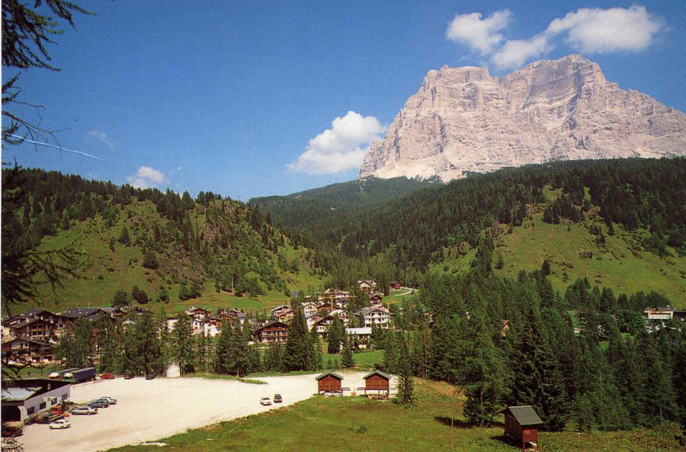
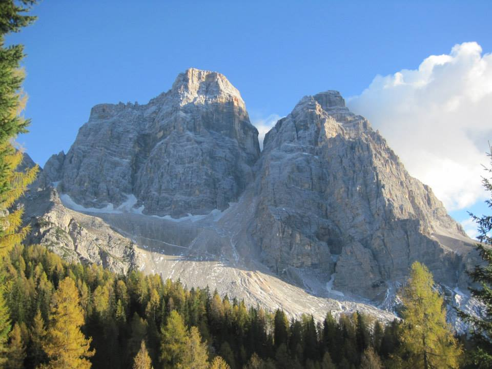

Travel Information
 TREVISO airport (121 Km) | VENICE airport (141 Km) |
MILANO airports |
The possibility to arrange shuttle transfers by bus from neighbourhing airport / railway stations is under investigation, provided that a minimum of eight persons is reached for each slot. Possible solutions are offered by Zoldobus (sorry, website is in Italian only!)
